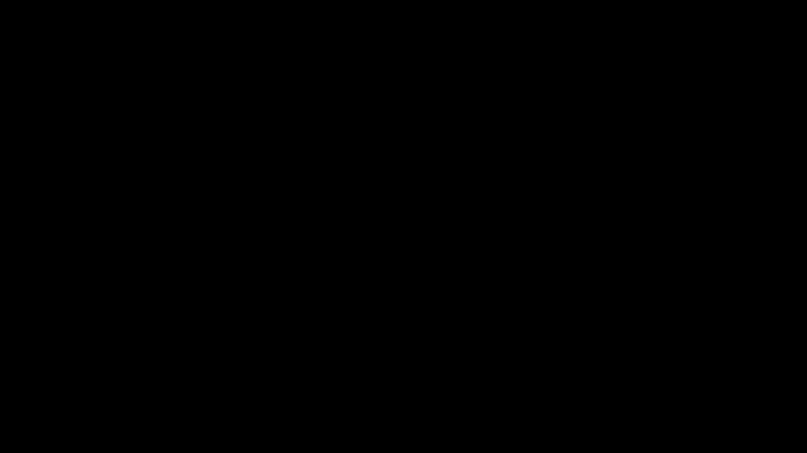
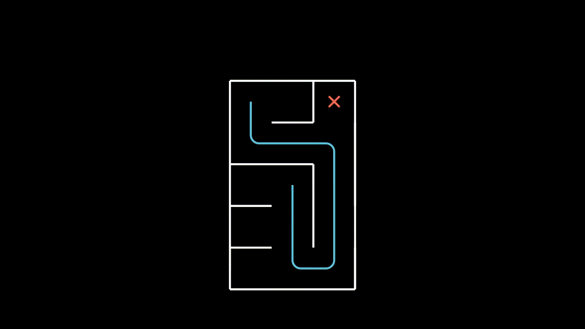
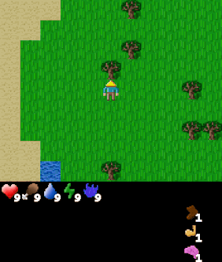
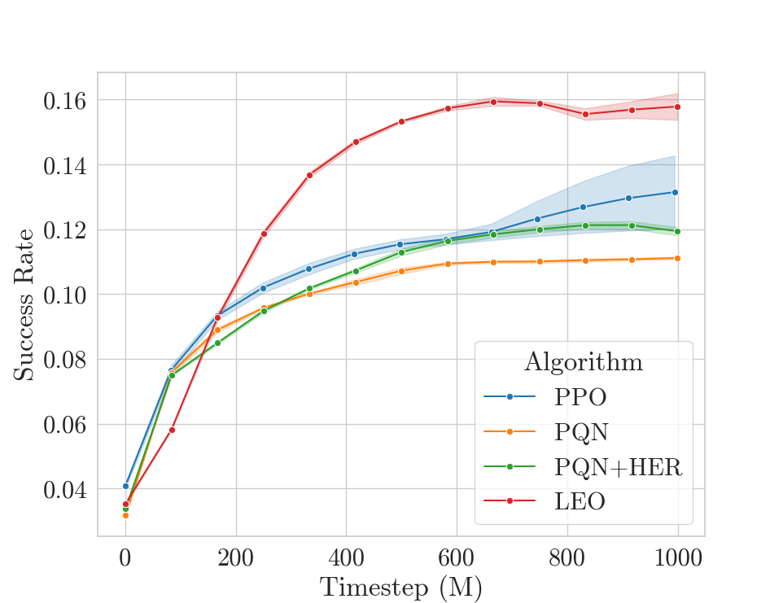
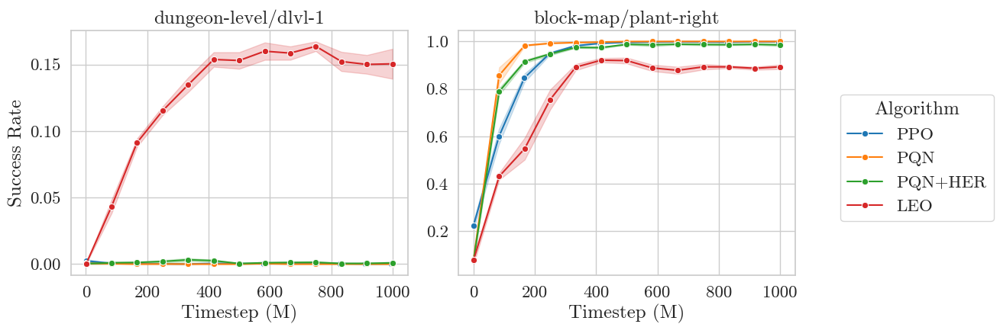
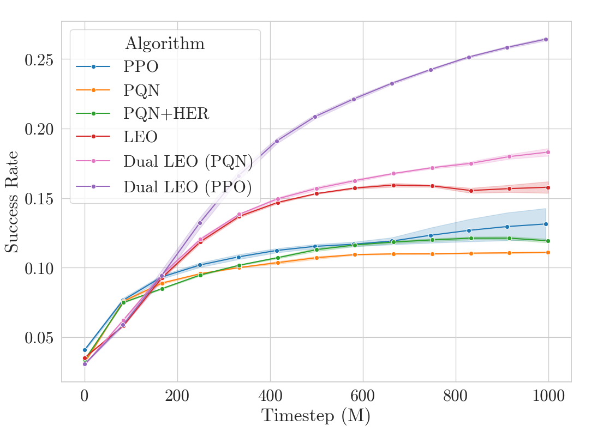
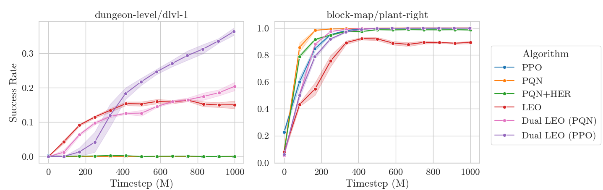
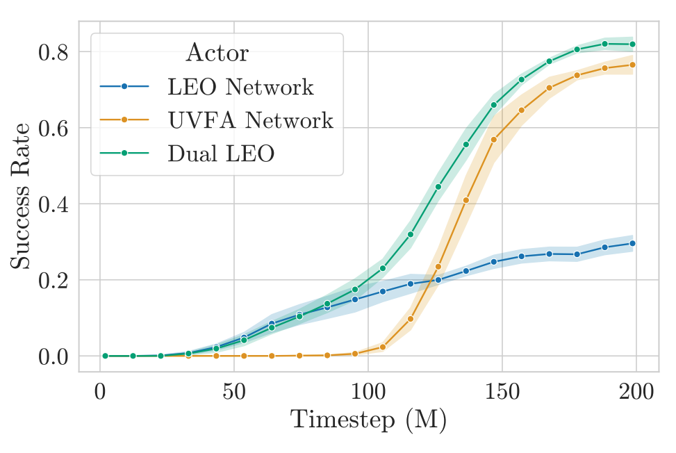

2026-05-14
This blog post is meant to serve as an accessible writeup for the LEO manuscript. Code for all methods discussed on this page is in the purejaxgcrl repository, which supports goal-conditioned Craftax and Gridworld environments.
We investigate sidestepping hindsight relabelling in goal-conditioned RL by learning with respect to all goals at once. We show significantly better performance on goal-conditioned Craftax than existing baselines.
We consider the online goal-conditioned reinforcement learning (GCRL) paradigm. Our goal-conditioned policy $\pi(s, g)$ is used to maximise the expected discounted return from the goal conditioned reward function $\mathcal{R}(s, g)$ for a commanded goal $g$. We now consider a suboptimal trajectory gathered in a simple goal-conditioned maze environment.

The easiest approach is to simply treat this like any other RL environment and learn on the gathered trajectory, with respect to the commanded goal. Our implicit assumption here is that the goal space is just a component of the state space.
Each pulse in this animation is meant to represent a learning update from the $(s, a, s')$ tuple at the source with respect to the goal at the sink.
Surely we can do better? In our given trajectory we can see that our agent achieves many goals along the way, but this information is never communicated to it in the learning step.
One solution is to employ goal relabelling, where we take transitions that were gathered through commanding some goal $g$ and use these to learn with respect to some different goal $g'$. Note that this makes our data off-policy.
Taking a step back, what we are doing here is decomposing our decision problem into a true underlying environment and a goal conditioning layer, which can affect the reward but not the transition dynamics. We also assume that we have oracle access to the goal conditioned reward function $\mathcal{R}(s, g)$ and can query this arbitrarily offline. While the true environment may be a black box, the goal conditioning functions like a wrapper around it that we can control and manipulate.
The most common method for goal relabelling is Hindsight Experience Replay, where we relabel with a goal $g'$ that is achieved later in the episode (assuming the goal set has such a notion of binary achievability).
HER is great and it works well empirically, but it feels like papering over a problem rather than addressing it. It also leaves open many questions. Which goal do we use to relabel if we achieve many in an episode? What if our goal space is such that we can complete multiple goals per timestep? What if our goal function is continuous and has no concept of completion? We don't just want to relabel with positive examples of completed goals, what's the right mixing proportion? Hold on... we don't even have to relabel with just a single goal - couldn't we relabel with many?
If we are working with a finite goal set, this line of thinking has one logical conclusion: relabel every transition with every goal.
This has lots of nice properties. We extract maximal information from every transition by considering how it relates to every goal in our goal set. An important point to note is that the motivation for HER can sometimes lead people into the mindset that learning signal only exists in positive examples (where we achieve a goal), which is not generally the case. There is information content in all transition-goal pairings. Furthermore, these updates will propagate bootstrapped value estimates, which is especially useful when only considering single step bootstrapped returns. Relabelling with all goals sidesteps the issue of label selection entirely, and therefore also removes the assumption for goals to be binary terminal in form.
However, this is incredibly slow, as it blows up your training data by a factor of $|\mathcal{G}|$. This is impractical for any non-trivial goal set.
This begs the question: can we get the maximal information extraction properties of all-goals relabelling without making learning unbearably slow?
The answer is yes! To achieve all-goals relabelling without incurring intolerably slow learning, we propose pushing (or currying) the goal space into the output of the $Q$-network. That is we reparameterise our network from
$$Q(s,g): \mathcal{S} \times \mathcal{G} \rightarrow \mathcal{A}$$to
$$Q(s): \mathcal{S} \rightarrow \mathcal{G} \times \mathcal{A}$$This gives an 'all-goals' $Q$-network that, for a given state, outputs the $Q$-values for every goal-action pair. This allows us to perform an all-goals learning step with a single backward pass of the network.
$$\mathcal{L} = (\mathcal{R}(s') + \gamma \cdot \text{max}_{a'}Q(a'| s') - Q(a | s))^2$$We refer to this method as Learning Everything all at Once (LEO).

Note that we are not the first to propose this type of all-goals update, with Horde (Sutton et al. 2011) and $Q$-map (Pardo et al. 2018) being the most notable examples. The basic LEO method could be considered a generalisation of $Q$-Map to arbitrary discrete goal sets or equivalently as a Horde network with a learned shared embedding and a parallelised update.
We now consider applying GCRL to the challenging Craftax environment. Craftax is an unsolved benchmark written entirely in JAX where the player must mine, craft and fight enemies to win the game. We define a large, heterogeneous set of 512 goals in the environment that span from collecting specific amounts of every type of resource, standing next to every type of block and enemy and reaching various levels of the dungeon. For a full listing of goals see the appendices of the manuscript.
 |
 |
 |
| Goal #114 inventory/stone_40-44 Collect 40-44 stone |
Goal #208 block_map/water_up Stand below water |
Goal #492 dungeon_level/dlvl_1 Reach dungeon level 1 |
The above agent has been trained over the entire goal set and is shown being commanded various goals. The agent was trained using Dual LEO (PPO), which we will introduce later.
Craftax has so far been unsolved by single-task reinforcement learning methods, in large part due to its properties of long horizons and hard exploration. An alternative paradigm for solving these types of environments is to define a large goal set that gives good state coverage and to train a goal-conditioned agent. While this may seem like a harder learning problem, the hope is that a dense enough set of goals will overcome the exploration problem. The reason existing approaches haven't solved Craftax (or comparable environments like the NLE or Minecraft) is not because the models lack capacity to represent the optimal policy, so it seems like a beneficial tradeoff if we can make the exploration problem easier by making the representational problem harder.
This approach looks superficially similar to reward shaping. The crucial difference is that we can be far less precise with our goal set, potentially including many goals that don't end up being relevant to solving the environment. Reward shaping usually involves repeated trial and error of training an agent, observing the final performance and iteratively tweaking the reward function. Ideally with our approach, we can simply define a large goal set once, and while the useless or counterproductive goals may waste time they won't sink the entire training run.
If we have powerful enough GCRL algorithms and processes, then I believe this is a promising and scalable approach to injecting prior knowledge to solve hard exploration problems.
We now compare algorithms based on their mean success rate over all goals in Craftax. We use the PQN algorithm as our base implementation and adapt it for both HER and LEO, since it can work on off-policy data. We also compare to PPO. We give each algorithm the same hyperparameter tuning budget (details in manuscript) and then compare over 1 billion timesteps with 5 repeats.

We see that LEO does better than the baselines - great! However, when taking a closer look at the per-goal success rates, we see something strange.

On harder goals, like dungeon_level/dlvl_1 (descend to the first level of the dungeon), LEO is the only method to achieve non-zero solve rates. However, on easier goals like block_map/plant_right (plant a sapling to the right of the player), while all the baselines converge close to 100% success rate, LEO plateaus at only 80% success rate. Why is this?
The answer is that the shared unconditioned trunk serves as an information bottleneck. When acting, the network has no way of knowing which goal is being commanded, and must devote its limited capacity to producing accurate $Q$-values across all goals. Furthermore, the LEO network has to learn a single embedding from which $Q$-values for all goals can be determined with a single linear layer. This can be seen as a form of late fusion of the state and goal modalities.
Intuitively, I find it helpful to think of LEO as a 'coarse-grained data sponge'. It will absorb all the information possible from every transition, but will not produce high fidelity value estimates. Despite this, the LEO value estimates are still clearly directionally useful, as evidenced by its success on hard goals. This points to a better way to use LEO.
Rather than acting directly with the LEO network, we can instead use it as a teacher for a UVFA-style network (we use UVFA to denote the traditional GCRL approach where the goal is fed into the observation). This allows us to reap the benefits of the LEO 'data sponge', without sacrificing the fidelity and early fusion of UVFA. We consider two methods: pairing LEO with both a PPO and PQN network respectively. We call this approach Dual LEO.
We train both a UVFA-style PQN network and a LEO network off-policy on the same stream of data. We act greedily with respect to the $Q$-values obtained through a linear combination of the two networks: $$Q(s,a,g) = \alpha \cdot Q_{\text{LEO}}(s, a, g) + (1 - \alpha) * Q_{\text{UVFA}}(s,a,g)$$
We act and learn with a UVFA-style PPO network as usual. We then also train a LEO network off-policy on the same stream of data produced by the PPO network. We then add a small behaviour cloning term that pushes the PPO policy $\pi(s, g)$ network towards $\text{argmax}_a(Q_{\text{LEO}}(s, a))$ and the PPO value network $V(s, g)$ towards $\text{max}_a(Q_{\text{LEO}}(s, a))$.
We see that this approach dramatically outperforms all other methods.

We can have our cake and eat it (or dungeon crawl while also gardening?). Dual LEO solves hard goals without sacrificing performance on the easier ones.

Taking a closer look at Dual LEO (PQN) performance on a specific goal inventory/coal_1 reveals something very interesting. Note that this goal is never achieved by PQN by itself (i.e. just a UVFA $Q$-network, equivalent to Dual LEO (PQN) with $\alpha=0$).
We consider the success rate of this goal when acting greedily with respect to (1) the LEO network (2) the UVFA network and (3) the Dual LEO linear combination of the two networks.

What we see is that the LEO network learns to achieve non-zero success rate on this goal long before the UVFA network does. This then translates to the Dual LEO actor achieving this goal, meaning we now have on-policy examples of the goal being commanded and solved. This in turn then allows the UVFA network to learn how to achieve the goal, where it then quickly surpasses the LEO network.
For Dual LEO (PQN) we found a low $\alpha$ of around $0.3$ to be best, meaning that at convergence it is mostly the UVFA network that influences the policy. This vindicates the concept of LEO as a teacher. LEO is great at internalising all data with respect to all goals, enough to generate some good enough on-policy trajectories to get the UVFA network going.
Note that the benefits of Dual LEO are therefore entirely tied to the exploration problem and online RL.
I think this foray into efficient all-goals learning has demonstrated it's utility, while also showing it still has limitations in its current form. Some interesting future directions include:
I have spent some time refactoring all the code for this project into the purejaxgcrl codebase, which should now serve as a simple and accessible starting point for anyone interested in this line of work.